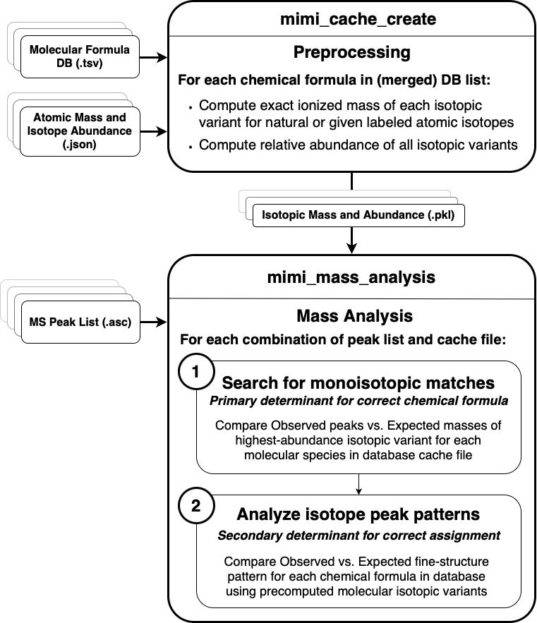
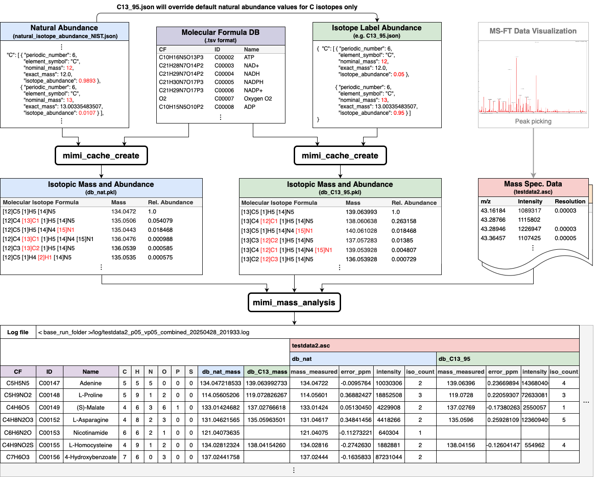

Architecture Design
Overview
MIMI’s architecture is designed around efficient mass spectrometry data processing and analysis. The system follows a modular design pattern with clear separation of concerns between data handling, processing, and analysis components.
{kind=link}
Detailed Flow Diagram
{kind=link}
Core Components
1. Data Input Layer
Sample Processor: Handles mass spectrometry data input from ASC files
Database Connectors: Interfaces with KEGG and HMDB metabolite databases
Cache Manager: Manages binary cache files for efficient data retrieval
2. Processing Engine
Formula Parser: Parses chemical formulas into atomic components
Mass Calculator: Computes molecular masses with ionization adjustments
Isotope Handler: Manages isotope patterns and abundance calculations
PPM Calculator: Handles mass tolerance calculations for matching
3. Analysis Layer
Pattern Matcher: Matches mass patterns between samples and reference data
Isotope Validator: Validates isotope patterns for compound identification
Result Formatter: Organizes and formats analysis results
Data Flow
Preprocessing Phase - Chemical formulas are parsed from databases (KEGG, HMDB) - Molecular masses are calculated for each compound - Isotope variants are computed and stored in cache files
Analysis Phase - Mass spectrometry data is loaded from sample files - Sample masses are compared against cached molecular masses - Matches are verified using isotope patterns - Results are filtered based on PPM tolerance settings
Output Phase - Matched compounds are organized by confidence level - Results are formatted into tabular output - Detailed information is provided for each match
Key Design Principles
Efficiency: Hash-based indexing for fast mass lookups
Flexibility: Support for multiple ionization modes and isotope labeling
Precision: PPM-based matching for high accuracy identification
Scalability: Batch processing capabilities for multiple samples
Modularity: Clear separation between components for maintainability
Implementation Details
Atom Module: Handles atomic data and isotope information
Molecule Module: Processes molecular formulas and calculates masses
Analysis Module: Coordinates the analysis workflow
Cache Creation: Precomputes molecular data for faster analysis
Database Connectors: Extract compound information from external sources